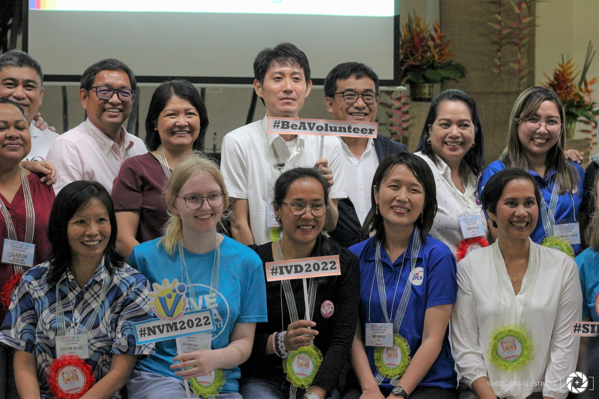
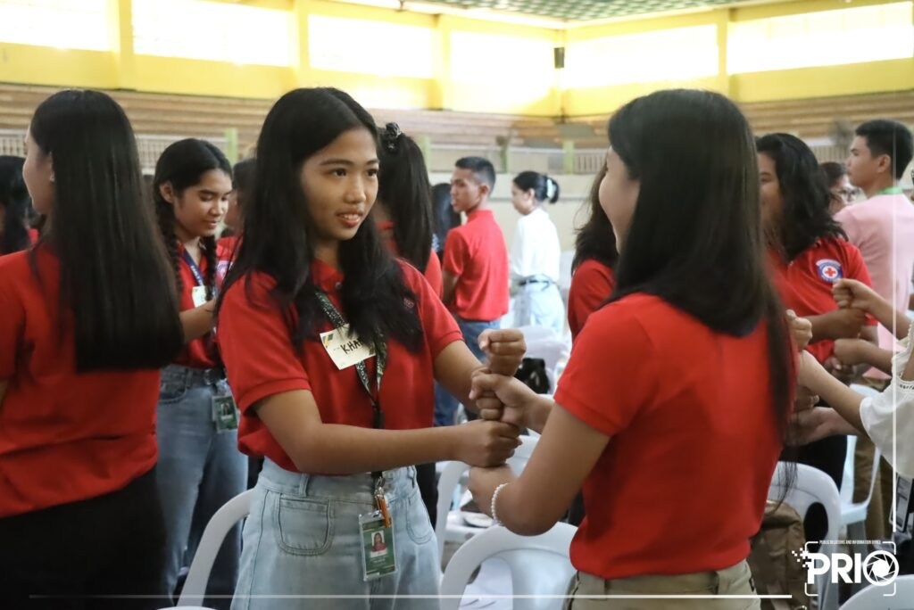
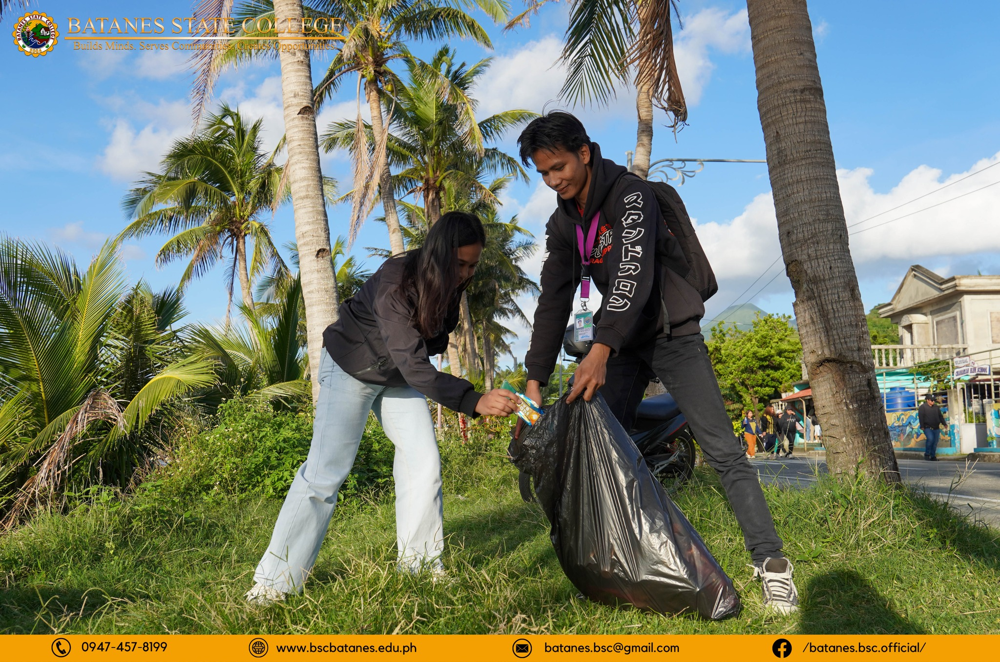

Volunteer Registration
Join PNVSCA's growing volunteer network.
Loading Website...
Discover programs, volunteer opportunities, partnerships, and initiatives that empower individuals and organizations to create lasting impact within Filipino communities.

Join PNVSCA's growing volunteer network.
Explore national and community initiatives.
Collaborate with PNVSCA for greater impact.
Develop leadership and volunteer skills.
PNVSCA offers various programs and services that encourage volunteerism, strengthen partnerships, and promote sustainable community development throughout the Philippines.
Register as an individual volunteer and become part of nationwide programs that create meaningful impact in communities.
Learn MoreParticipate in environmental, educational, health, livelihood, and disaster-response volunteer initiatives.
View ProgramsCollaborate with PNVSCA through government, private sector, academic, and civil society partnerships.
Partner With UsDevelop leadership, project management, community organizing, and volunteer engagement skills.
Explore TrainingCelebrate outstanding volunteer initiatives, organizations, and individuals making exceptional contributions.
Learn MoreStrengthen volunteer exchanges and international collaboration through global volunteer development initiatives.
Read More
Support local communities through volunteer-driven outreach activities.

Inspire young Filipinos through leadership and civic engagement.

Participate in environmental protection and sustainability initiatives.
Joining PNVSCA is simple. Follow these steps and begin your volunteer journey toward meaningful community service.
Complete the volunteer registration process by providing your personal information and areas of interest.
Participate in orientation sessions that introduce PNVSCA's mission, programs, and volunteer expectations.
Receive the necessary training and preparation depending on your assigned volunteer activities.
Participate in volunteer activities and become part of programs that create positive impact throughout Filipino communities.
Individuals, organizations, educational institutions, local government units, and private sector partners who are committed to community service may participate in PNVSCA volunteer programs.
Yes. PNVSCA collaborates with partners throughout the Philippines to implement volunteer initiatives across various regions.
Volunteer registration is free. Specific activities may have their own participation requirements, depending on the program.
Organizations may coordinate directly with PNVSCA through official communication channels to discuss volunteer partnerships and collaborative initiatives.
Join thousands of Filipinos working together to build stronger communities through volunteerism, collaboration, and meaningful public service.
Notification